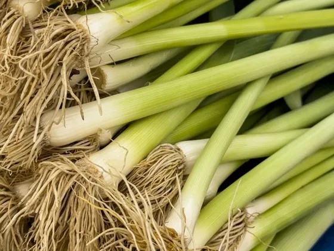
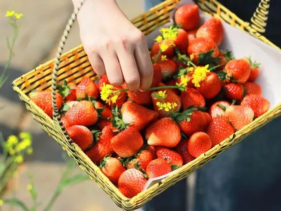
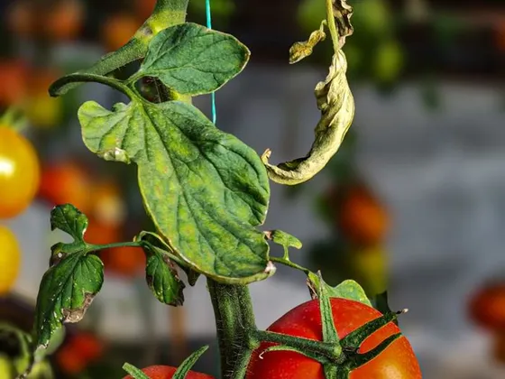
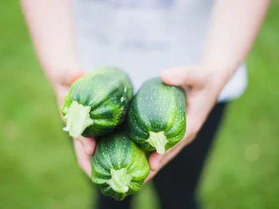
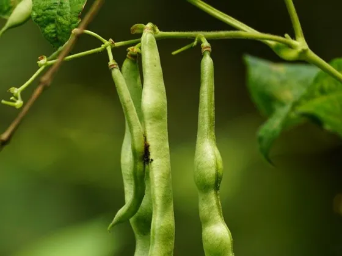
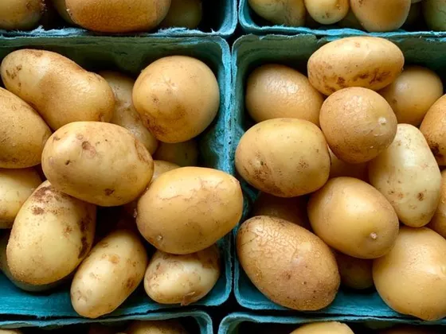
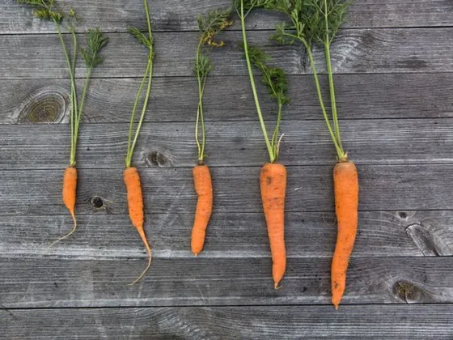
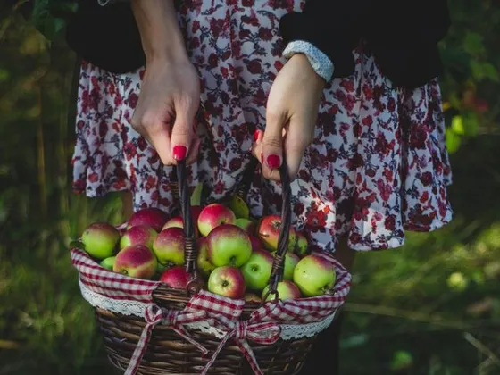
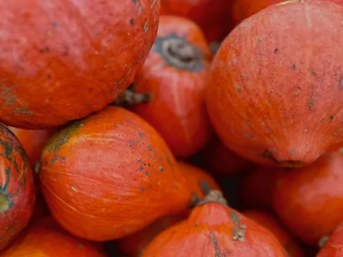
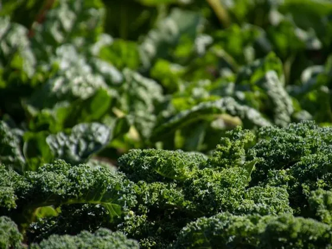

- Home
- What's growing
What's growing now
Everything we pick follows the weather. Choose a month to see what is in the beds, and what is on the harvest table that week.
In the field

In seasonSalad onions
April to June
Sow in March under cloth, pull from April. Sweet, crunchy and ready in weeks.

In seasonStrawberries
June to July
Picked warm by volunteers every Saturday in June. The first punnets always go to Little Sprouts.

In seasonTomatoes
July to September
Grown in the greenhouse from February seed. Sun-ripened, never refrigerated.

In seasonCourgettes
July to September
One plant feeds a street. Picked small and often so the plants keep going.

In seasonRunner beans
July to September
Climbing the wigwams by the gate. Pick every two days or they turn stringy.

In seasonNew potatoes
July to September
Lifted with a fork on Tuesdays. Boil them within the hour for the best flavour.

In seasonCarrots
August to November
Sweetened by the first cold nights. Wonky ones go straight into the soup pot.

In seasonApples
September to October
From the old orchard behind the greenhouse. Windfalls are pressed into juice.

In seasonPumpkins
September to November
Grown on the compost heap and cured in the sun. Soup, then lanterns.

In seasonKale
October to March
Gets sweeter after frost and keeps cropping all winter. The hardest worker on the farm.
The beds are resting. Come back in March for the first sowings, or join a winter work day to mulch and prune.